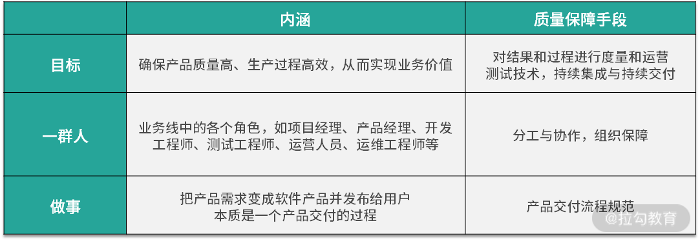
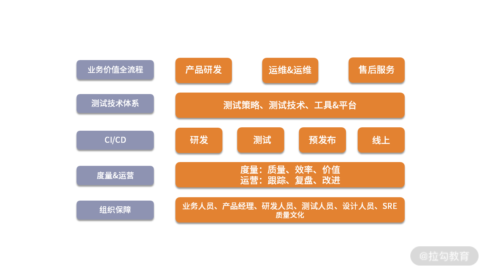

- 00 开篇词 既往不恋，当下不杂，未来不迎.md.html
- 01 微服务架构有哪些特点？.md.html
- 02 微服务架构下的质量挑战.md.html
- 03 微服务架构下的测试策略.md.html
- 04 单元测试：怎样提升最小可测试单元的质量？.md.html
- 05 集成测试：如何进行微服务的集成测试？.md.html
- 06 组件测试：如何保证单服务的质量？.md.html
- 07 契约测试：如何进行消费者驱动的契约测试？.md.html
- 08 端到端测试：站在用户视角验证整个系统.md.html
- 09 微服务架构下的质量保障体系全景概览.md.html
- 10 流程规范篇：高速迭代的研发过程需要怎样的规范？.md.html
- 11 测试技术篇：测试技术这么多，我该如何选型？.md.html
- 12 测试技术篇：如何提升测试效率？.md.html
- 13 测试技术篇：专项测试技术解决了哪些专项问题？.md.html
- 14 CICD 篇：如何更好地利用多个“测试”环境？.md.html
- 15 CICD 篇：如何构建持续交付工具链？.md.html
- 16 度量与运营篇：如何做好质量和效率的度量与运营？.md.html
- 17 度量与运营篇：如何度量与运营效率和价值？.md.html
- 18 组织保障篇：质量是设计出来的.md.html
- 19 软件测试新趋势探讨.md.html
- 20 结束语 QA 如何打造自身的核心竞争力？.md.html
09 微服务架构下的质量保障体系全景概览
上一模块，我详细讲解了微服务架构下的分层测试策略，它可以确保系统的所有层次都被覆盖到，更多体现在测试活动本身的全面性和有效性方面。但要想将质量保障内化为企业的组织能力，就需要对质量保障进行体系化的建设。那么从今天开始，我将讲解微服务质量保障体系的相关内容，本课时主要介绍质量保障体系的全景概览。
质量保障体系：以不变应万变
不知道你有没有注意到一个现象：虽然不同的业务之间有非常多的差异性，但当它们在质量保障方面建设得比较完备和完善时，其质量保障体系框架大同小异。
为什么会出现这种情况呢？这需要回归到“质量保障”和“体系”的定义上来。
- 质量保障的定义
通常情况下，对业务发展来说，质量保障体系是企业内部系统的技术和管理手段，是有计划的、系统的企业活动，目的是满足业务发展需要，生产出满足质量目标的产品。
对应到微服务架构下，说得更接地气一点就是为了共同的目标，一群人在一块儿做事。总结如下：

所以，质量保障体系是通过一定的流程规范、测试技术和方法，借助于持续集成/持续交付等技术把质量保障活动有效组合，进而形成系统化、标准化和规范化的保障体系。同时，还需要相应的度量、运营手段以及组织能力的保障。
- 体系的定义
体系：泛指若干有关事物或某些意识按照一定的秩序和内部联系组合而成的整体，是不同系统组成的系统。
听起来比较抽象，以项目管理知识体系 PMBOK 做个类比，我们都知道管理一个项目是比较复杂的，如果没有类似的经历经验，或者相关的知识和技能，你甚至都不知道应该从哪里入手、应该关注哪些方面、每个方面应该怎样推进，等等。而 PMBOK 对项目管理所需的知识、技能和工具进行的概括性描述，即项目管理的五大过程组和十大知识领域，掌握了这些体系知识，你就具备了管理任何项目所需的知识基础。
PMBOK 是 Project Management Body Of Knowledge 的缩写， 指项目管理知识体系的意思，具体是美国项目管理协会（PMI）对项目管理所需的知识、技能和工具进行的概括性描述。它涵盖了五大过程组和十大知识领域，其中，五大过程组是启动过程、规划过程、执行过程、监控过程、收尾过程；十大知识领域是整合管理、范围管理、时间管理、成本管理、质量管理、人力资源管理、沟通管理、风险管理、采购管理、干系人管理。
可见，当一个体系进行了比较合理的抽象和概括后，它能够把一系列的活动拆解成不同的方面，这些方面又相互协同形成一个有机的整体，做到以不变应万变。我想，这也是质量保障体系对每个测试从业者个人职业发展来讲最有价值的地方，因此一定要尽早建立质量保障体系的意识，从全局视角理解所在业务中的质量保障体系。
建立质量保障体系的切入点
可能你会疑问，既然质量保障体系都大同小异，那我们照着它做不就可以了吗？其实不然。这里需要先对齐一下认知：
质量保障体系，不能为了建设而建设，一定要结合业务特点和所处阶段，它是为解决特定问题而逐渐形成的体系。
质量保障建设的终点都一样，但业务特点和阶段不同，各个环节建设的优先顺序大不相同。实际在进行质量保障建设时，通常会从业务特点和阶段、业务目标和质量挑战两个方面去切入。
业务特点和阶段
业务特点和阶段决定了业务最核心的关注点，也影响了质量保障工作的侧重点，举例来说：
- 搜索引擎类的业务，通常的特点是高并发、高存储量，且搜索内容对时效性要求较高，它属于效果类业务，线上会有各种类型的 badcase。那么，数据生产过程的质量把控、搜索效果的评测、服务可用性和并发性等尤其重要。
- 出行类业务，如用车场景等，通常的特点是业务元素多（乘客、司机、租车公司等）、业务链路长、需要线上线下协作，同时涉及金钱交易、责任归属、人身安全等，客诉问题多种多样。那么，全链路的自动化测试和性能测试、客诉响应机制等建设就比较关键。
- 金融类业务，对安全性要求极高，同时需要响应市场和政策要求。那么安全类测试、风险控制类的产品策略等方面的质量保障非常重要。
另外，在业务的不同阶段（初创期、探索期、成长期、稳定期），对产品迭代和质量的要求也有所不同，这些都需要综合考虑。
业务目标和质量挑战
不同的业务特点对应的业务目标也有所差异，但共性都是确保产品质量高、生产过程高效，从而实现业务价值，这体现出对质量、效率、价值三个维度的要求。伴随着微服务架构下带来的各种质量挑战，满足这三个业务目标将更具难度，因此在进行质量保障建设时，要尽可能地做到如下效果：
- 自动化。主要是为了提高研发过程（研发、测试、发布）的质量和效率，引入丰富的测试工具和技术，建立完整的持续集成和持续交付机制；
- 全流程参与。测试团队需要通过规范和工具建设等，贯穿业务价值全流程，把各团队高效组织起来共同完成业务目标；
- 泛质量管理。变被动的验证为主动的预防，变传统的代码质量管理为业务全流程的泛质量管理，在各团队中推进质量文化建设。
微服务架构质量保障体系的全景概览
基于上述分析，通用的微服务质量保障体系如下：

如下是质量保障体系的关键方面，后续课程也将按如下内容展开讲解。
- 项目管理和流程规范：每个业务所做的事情都是把战略规划拆解成大的业务目标，再进一步拆解成产品需求。产品需求又经历了产品研发、运营&运维、售后服务这样的业务价值全流程。没有规矩不成方圆，在这个过程中，无论项目管理还是流程规范，都是保障质量中非常关键的一环，只有建立起闭环、分工明确、易执行的流程规范，才能保证其可落地，从而形成业务价值过程的正循环。
- 微服务测试技术： 除功能性之外，质量还有其他很多属性，如可靠性、易用性、可维护性、可移植性等，而这些质量属性就需要通过各种专项测试技术来保障了。同时，还有许多测试技术的首要价值在于提升测试效率。因此合理地组合这些测试技术，形成测试技术矩阵，有利于最大化发挥它们的价值。
- 持续集成与持续交付：微服务的优势需要通过持续集成和持续交付的支持才能充分发挥出来，这就要求在执行测试活动时提高反馈效率、尽快发现问题。一方面要明确各种“类生产环境”在交付流程中的位置和用途差异点，保证它们的稳定可用。另一方面需要将各种测试技术和自动化技术集成起来，使代码提交后能够自动进行构建、部署和测试等操作，形成工具链，这样才能实现真正意义上的持续集成和持续交付。
- 度量与运营：管理学大师德鲁克曾经说过“你如果无法度量它，就无法管理它”。要想能有效管理和改进，就难以绕开度量这个话题。业务的目标是“确保产品质量高、生产过程高效，从而实现业务价值”，在质量保障体系中，我将基于质量、效率、价值等多维度视角建立起基础的度量体系，并结合定期运营做定向改进，形成 PDCA 正向循环，促使各项指标稳步提升。同时，需要特别警惕的是，度量是一把双刃剑，这里我也会告诉一些我的经验教训和踩过的坑，避免走错方向。
- 组织保障：打铁还需自身硬，质量保障是每个测试团队的天职，测试人员要努力打磨自身的质量意识和质量基本功，通过上述手段不断提升产品质量。需要注意的是，微服务架构下带来的质量挑战严峻，产品迭代飞快，离不开组织中每个参与部门的努力，而单靠测试人员已经无法保障好产品质量。正如质量大师戴明所说，质量是设计出来的，不是测试出来的。因此在组织中树立起“质量文化”至关重要。在这部分内容里，我将介绍常见的参与方的角色、职责和协作过程中的常见问题、对策，以及如何营造质量文化等内容。
总结
本节课我讲解了质量保障体系的内涵，它将质量保障内化为企业的组织能力，其基本框架可以以不变应万变。无论对业务还是对测试人员自身来说都至关重要。
紧接着我讲解了微服务架构下的质量保障体系的切入点，列举了搜索引擎、金融产品、用车场景等业务的常见特点，从业务特点和阶段、业务目标和质量挑战等方面切入，从而影响质量保障建设的侧重点和子方向的落地优先级。
最后我给出了质量保障体系全景概览图，它包括项目管理和流程规范、微服务测试技术、持续集成与持续交付、度量与运营、组织保障等几个重要组成部分，并介绍了各部分的内容，它们相互协同为质量保障体系添砖加瓦。
你所负责的项目或业务，是否是微服务架构？如果是，它的质量保障体系是怎样的，在这其中，你自己的掌握情况如何，请写在留言区。同时欢迎你能把这篇文章分享给你的同学、朋友和同事，大家一起来探讨。
相关链接： https://winderresearch.com/how-to-test-in-a-microservices-architecture/ https://www.gocd.org/2018/05/08/continuous-delivery-microservices-test-strategy/ https://www.softwarecertifications.org/software-testing-body-of-knowledge/ https://developer.51cto.com/art/201911/606778.htm